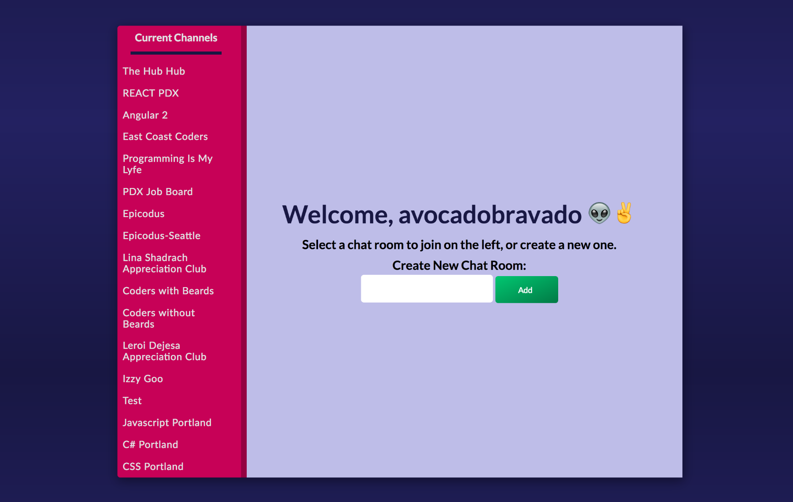

Have you ever wanted to reach out to someone on GitHub, but they hadn't listed any contact information? That's where The Hub comes in. The Hub is an Angular application allows a user to log in with their GitHub account and chat with other users. GitHub's Repository and Search APIs were also implemented into the project so that members of The Hub can search for GitHub users and existing repositories directly within the app.
The Hub was built over the span of 5 1/2 days. Throughout The Hub's development, I collaborated closely with Arianna Chau to design all of the front end aspects of the application. When it came to the visual identity and branding of The Hub, we didn't want to simply take what GitHub already had. Instead, we wanted something that invoked the feel of and was influenced by GitHub, but could still stand on its own and feel welcoming. For example, for The Hub's color palette, we referenced Primer, GitHub's internal CSS framework. The Hub's space elements were inspired by the space-themed website for GitHub's desktop application.
Development-wise, it was important for us to organize our styles modularly so we could re-use the same components over and over again on different pages. We relied heavily on Sass variables to ensure our styles remained consistent throughout the entire application. We broke up our Sass (CSS) files into over 20 different partials. For example, one partial contained all the styles for our header, we had other partials for each page, buttons, form inputs, animations, and so forth. This allowed us to easily navigate through our project whenever we needed to make changes and find what we were looking for quickly.
{kind=link}
{kind=link}
{kind=link}